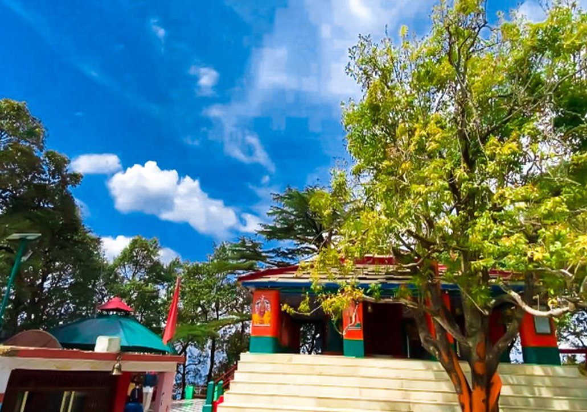
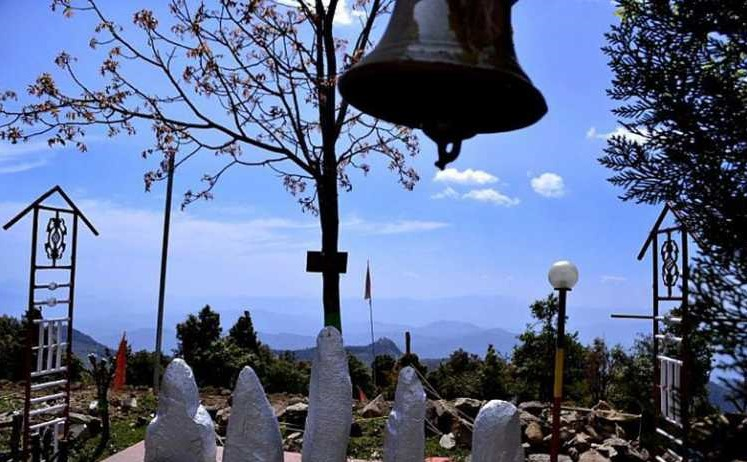
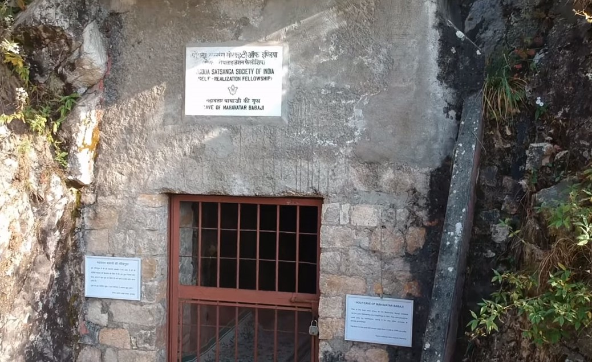

OUR VIEW
On Some Of The Best Temples in Dwarahat

i) Dunagiri Temple
The most unique feature of the Dunagiri temple would be the 500 uneven steps to the temple. As per Hindu mythology, when Hanuman Ji was bringing Drona Parvat instead of Sanjivani booty for Laxman Ji, a part of it fell at this place. Earlier it was named Drona Giri (Giri means ‘fell’) which over time got translated to Doonagiri.
Distance from Dwarahat: 14 km away

ii ) Pandukholi Temple
This temple got it’s name from the Pandavas from Mahabharat. It is believed to be one of the shelters of the Pandavas during their 1-year ‘Agyatvas’ – literally meaning “anonymous stay”. People can see the 5 idols of Pandavas that are found here.
Distance from Dwarahat: 24 km away

iii) Mahavatar Babaji Cave
It is the most spiritual cave in the Kumaon region of Uttarakhand which is also the birthplace of Kriya yoga. Mahavatar Babaji gave his first teachings of Kriya yoga to Mahasaya Lahiri at this place.
Mahavatar Babaji has been seen only by his disciples and is known to be 2000 years in age but still has the physical features of 20 years old.
Distance from Dwarahat: 25 km away